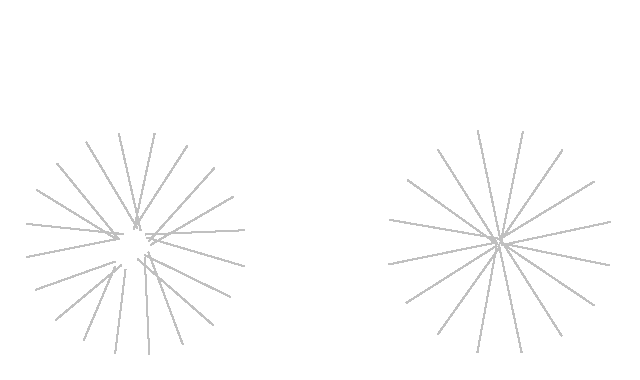

クロモリ1号

クロモリ（クロームモリブデン鋼）は鉄にクロムやモリブデンを加えた合金であり、 自転車に適した特性を持つため、古くから自転車のフレームに使われている。 クロモリで作られる自転車は、全体が細身で トップチューブが地面と平行になるホリゾンタルフレームが良く似合い、その伝統的なフォルムが美しい。 最新のカーボン素材のロードバイクに比べてレトロな雰囲気になるため、景色を楽しむツーリング用にも使いやすい。



- 組んで頂いた自転車屋はさいたま市のパワーコープ。当時遠方に住んでいたため東京出張のついでに寄らせていただき、全パーツを指定して注文した。 店内にColnagoの芸術的なフレームがいくつも吊るしてあり、実際のカラーリングを確認して注文することができた。
- ホイールはMavicオープンプロ（リム）＋DTSwissコンペティション（スポーク）＋Campanoloコーラス（ハブ）の手組み。個人的には至高の銀輪。
- クロモリ素材であることも影響しているだろうが、感覚的には（ガチガチではなく）しなやかに仕上がっている印象で、 駆動系・制動系・ホイール周りは購入してから一度も調整していない。 他のバイクとは何かが違うと感じるが、素人なので具体的には理解できていない。 もしかしたら全てのパーツを神業的な精度（公差0）で組み上げているのかもしれない。